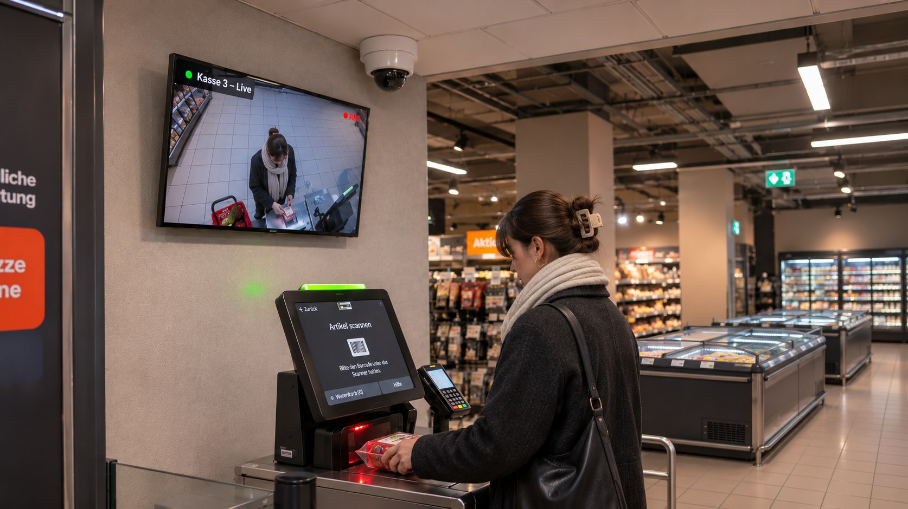
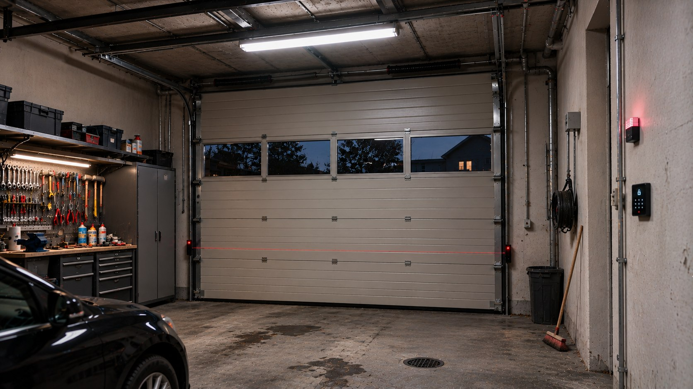
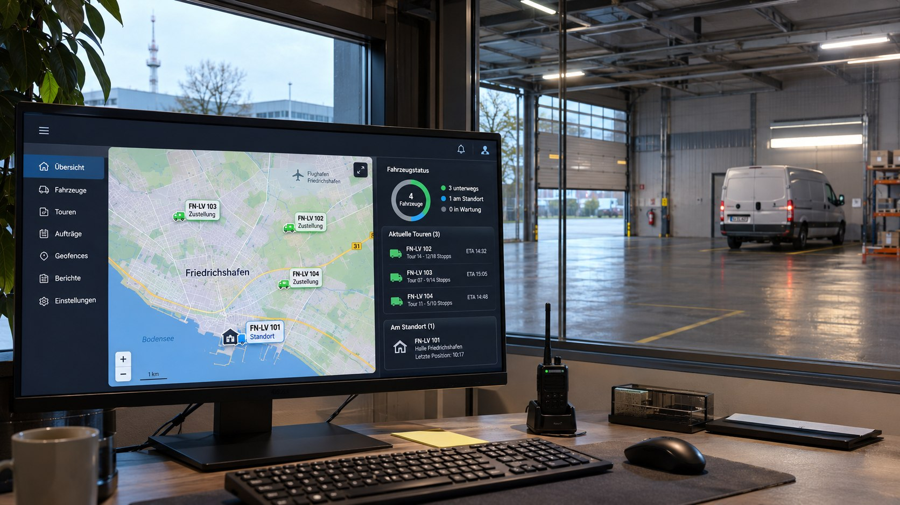

01
Überwachungskameras
Verkauf, Planung und fachgerechte Installation moderner Kamerasysteme für private und gewerbliche Objekte.
- Innen- & Außenkameras
- Montage & Einrichtung
- Livebild & Aufzeichnung
Sicherheitstechnik & Installation
Von der ersten Beratung bis zur fertigen Anlage: MAXTAC verkauft, installiert und betreut zuverlässige Kamera-, Alarm- und Smart-Home-Systeme für Ihr Objekt.
Kostenlose ObjektbesichtigungBesichtigung
+Planung & AngebotPlanung
+Montage & EinrichtungEinrichtung
+Wartung & ReparaturWartung
Kostenlose Objektbesichtigung
MAXTAC sieht sich Ihr Objekt kostenlos vor Ort an. Dabei erfassen wir die wichtigen Bereiche und planen daraus eine Sicherheitslösung, die zu Ihrem Objekt passt.
Unsere Leistungen
Wir liefern, montieren, konfigurieren und warten Ihre Sicherheitstechnik – mit einem festen Ansprechpartner für das gesamte Projekt.
Verkauf, Planung und fachgerechte Installation moderner Kamerasysteme für private und gewerbliche Objekte.
Zuverlässige Alarmtechnik und Bewegungsmelder erkennen Gefahren frühzeitig und informieren Sie im Ernstfall.
Damit Ihre Sicherheitstechnik zuverlässig bleibt, übernehmen wir Prüfung, Instandsetzung und Austausch.
Wir binden Kameras, Melder und Alarmtechnik sinnvoll in kompatible Smart-Home-Systeme ein.
Systeme für jeden Einsatz
Von der klassischen Objektüberwachung bis zur mobilen oder thermischen Speziallösung: Wir wählen die Technik passend zu Umgebung, Risiko und Einsatzdauer.

Zuverlässige Videoüberwachung für Gebäude, Höfe und gewerbliche Flächen.

Kamerabilder zentral und in Echtzeit im Blick – ideal für Verkaufsflächen und Eingänge.

Bewegungen an Zufahrten und in Garagen früh erkennen und gezielt alarmieren.

Klare Überwachung bei Dunkelheit mit Infrarot- und Low-Light-Technik.

Wärmebilder für sensible Bereiche und zuverlässige Erkennung unabhängig vom Licht.

Fahrzeuge und mobile Technik zentral orten und ihre Standorte jederzeit im Blick behalten.

Flexible Überwachungstürme für Baustellen, Veranstaltungen und wechselnde Einsatzorte.

Autarke Kamerasysteme für Standorte ohne feste Strom- oder Netzwerkanbindung.

Drohnenstationen und individuelle Technik für besondere Anforderungen.
So läuft es ab
Wir übernehmen alles – von der Planung und Auswahl der Technik bis zur Montage, Einrichtung und Übergabe eines vollständig nutzbaren Systems.
Erstgespräch vereinbarenWir klären Anforderungen, Objekt und gewünschte Funktionen.
Sie erhalten ein verständliches Konzept mit Technik, die genau zu Ihrem Objekt und Ihren Anforderungen passt.
Wir installieren, konfigurieren und testen alles und übergeben Ihnen das vollständig eingerichtete System.
Über MAXTAC
MAXTAC begleitet Sicherheitsprojekte von der ersten Besichtigung bis zur fertig eingerichteten Anlage. Im Mittelpunkt stehen eine verständliche Planung, passende Technik und eine saubere Umsetzung.
Ob Videoüberwachung, Alarmtechnik oder Smart-Home-Anbindung: Die Lösung wird auf das Objekt, die gewünschten Funktionen und die spätere Nutzung abgestimmt. Auch Wartung und Reparatur gehören zum Leistungsangebot.
Projekt besprechenHäufige Fragen
Die wichtigsten Antworten rund um Planung, Montage und Betrieb Ihrer Sicherheitstechnik.
Nach Ihrer Anfrage klären wir zunächst Ihr Vorhaben und die gewünschten Funktionen. Anschließend folgen Objektbesichtigung, Planung und ein verständliches Angebot. Nach der Abstimmung wird das System montiert, eingerichtet und getestet.
Ja. MAXTAC sieht sich Ihr Objekt kostenlos vor Ort an und erfasst die relevanten Bereiche. Der Termin wird individuell mit Ihnen abgestimmt.
Zum Angebot gehören Videoüberwachung, Alarm- und Bewegungsmelder, Smart-Home-Anbindungen sowie Lösungen für besondere Einsatzbereiche. Welche Technik sinnvoll ist, wird passend zum Objekt geplant.
Das wird bei der Planung geprüft. Bestehende Systeme können eingebunden werden, wenn Schnittstellen und Komponenten miteinander kompatibel sind.
Die Technik wird konfiguriert und getestet. Sie erhalten ein vollständig eingerichtetes System und eine Erklärung der wichtigsten Funktionen. Wartung und Reparatur können ebenfalls übernommen werden.
Die Kosten richten sich unter anderem nach Objekt, Funktionsumfang, Anzahl der Komponenten und Montageaufwand. Nach der Besichtigung erhalten Sie ein nachvollziehbares Angebot.
Projekt starten
Erzählen Sie uns kurz von Ihrem Vorhaben. Wir melden uns persönlich und besprechen die nächsten Schritte.
Öffnet die vorbereitete Anfrage in Ihrem E-Mail-Programm.